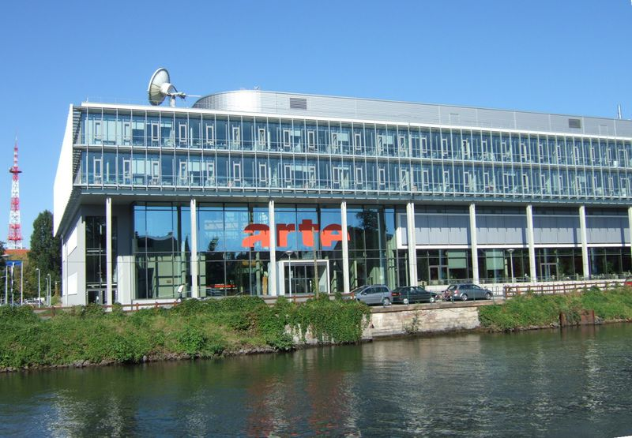

Job Étudiant - API
Août 2025
Expérience professionnelle
Travail en restauration au sein des bâtiments d’ARTE à Strasbourg pour le prestataire API. J’ai participé aux préparatifs en légumerie, au service à la cafétéria, à la plonge et au nettoyage des espaces. J’ai appris à respecter strictement les règles d’hygiène et de sécurité, à organiser mon travail efficacement et à maintenir un bon rythme dans un environnement exigeant. Cette expérience m’a permis de développer ma rigueur, mon autonomie et mon sens du travail en équipe.
En savoir plus